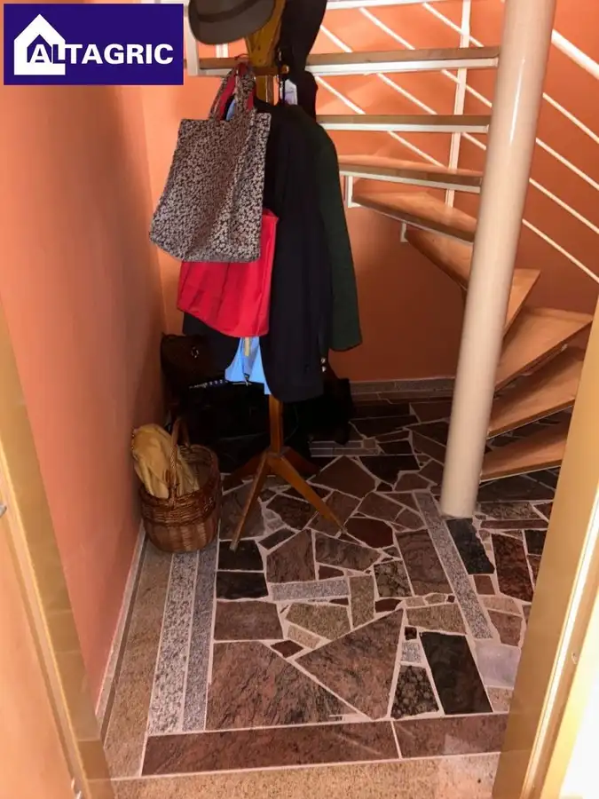
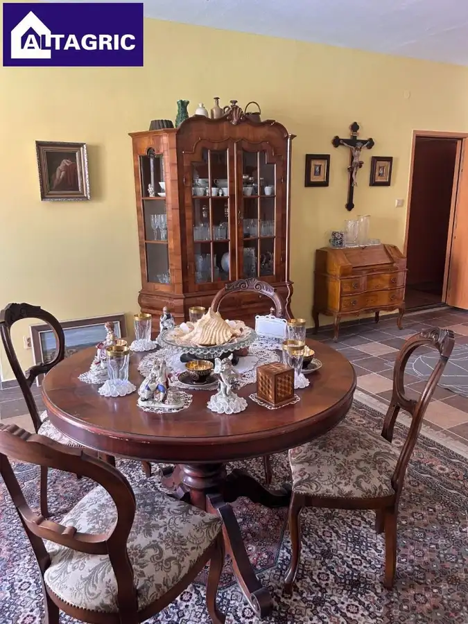
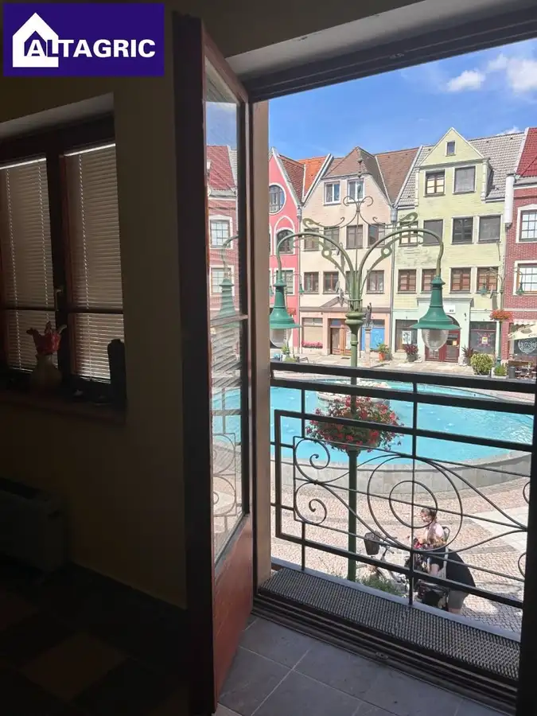
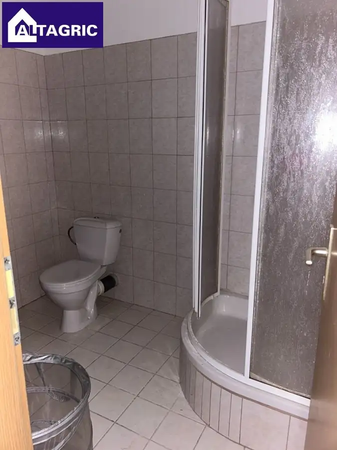
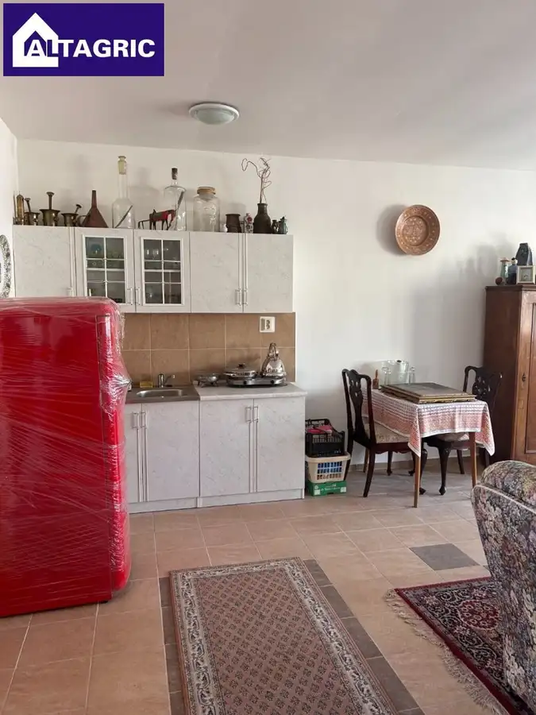
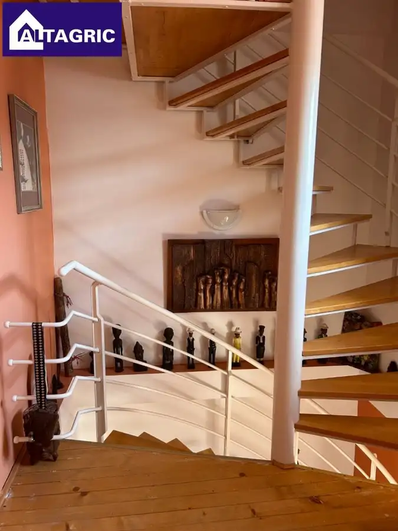
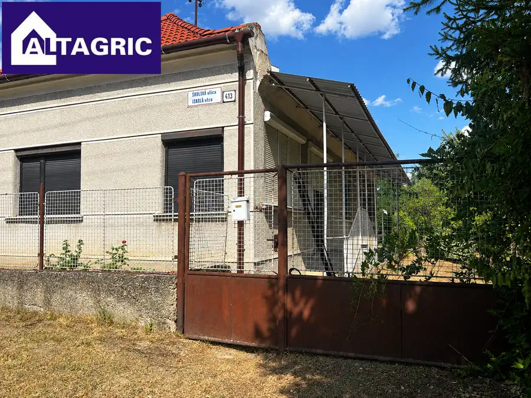
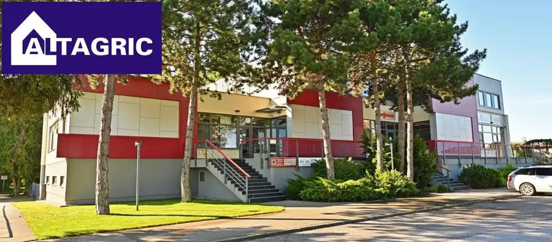
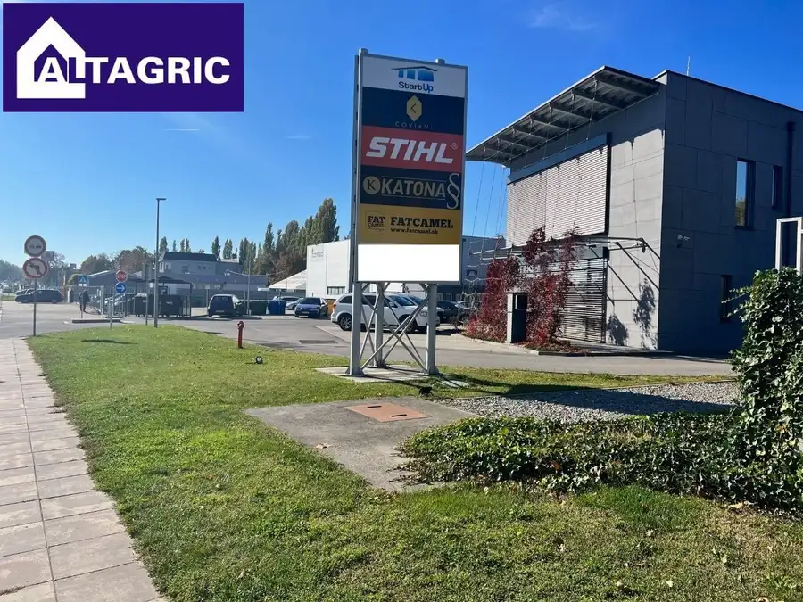

Polyfunkčný objekt na predaj na Nádvorí Európy v Komárne
Komárno






- Plocha310 m²
- StavČiastočná rekonštrukcia
- VlastníctvoOsobné
O nehnuteľnosti
Ponúkame Vám na predaj polyfunkčný objekt v Komárne, ktorý sa nachádza na Nádvorí Európy. Dispozičné riešenie nehnuteľnosti sa skladá z podzemného podlažia, 3 nadzemných podlaží a galérie. Na prvom nadzemnom podlaží sa nachádza vstup do objektu, pracovňa a toaleta. Na druhom nadzemnom podlaží sa nachádza obývacia izba, kuchyňa, balkón. Na treťom nadzemnom podlaží sa nachádza spálňa, kúpelňa. Na najvyššom podlaží sa nachádza galéria s krásnym výhľadom na mesto. V celom objekte je elektrické kúrenie s meračmi, ktoré sa nachádzajú na každom podlaží. Nehnuteľnosť prešla čiastočnou rekonštrukciou. Úžitková plocha nehnuteľnosti je 310 m2. Cena 384 000 €.Kontakt: Aniko Lévaiová GSM: 0907594144 E-mail: levaiova@altagric.sk
Parametre
- Druh
- Polyfunkčný objekt
- Dátum zverejnenia
- 18. 06. 2024
- Stav nehnuteľnosti
- Čiastočná rekonštrukcia
- Typ
- Predaj
- Vlastníctvo
- Osobné
- Úžitková plocha
- 310 m²
Kde to je


Mohlo by Vás zaujímať

DomNové 83 000 €Rodinný dom na predaj v obci Moča Moča 150 m²
Komerčné priestoryNové Cena na vyžádáníAdministratívne priestory na prenájom v Novej Stráži - okres Komárno 23,26m2, 33,67m2, 8,62m2, 18,96m2, 45,54m2, 23,97m2, 16,95m2, 6,15m2. Komárno 23 m²
Komerčné priestoryNové Cena na vyžádáníKancelárie na prenájom v Komárne v novostavbe polyfunkčnej budovy 44,64m2, 23,3m2 Komárno 23.3 m²